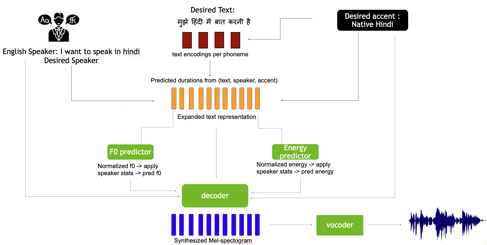

RADMMM: Multilingual Multiaccented Multispeaker TTS with RADTTS
RADMMM: Multilingual Multiaccented Multispeaker TTS with RADTTS
Rohan Badlani, Rafael Valle, Kevin J. Shih, João Felipe Santos, Siddharth Gururani, Bryan Catanzaro (NVIDIA)
Available on arXiv - Jan 2023.
Code available here https://github.com/NVIDIA/RAD-MMM/tree/main
This journal was last updated on 2/3/2024.
Overview
We work to create a multilingual speech synthesis system which can generate speech with the proper accent while retaining the characteristics of an individual voice. This is challenging to do because it is expensive to obtain bilingual training data in multiple languages, and the lack of such data results in strong correlations that entangle speaker, language, and accent, resulting in poor transfer capabilities. To overcome this, we present a multilingual, multiaccented, multispeaker speech synthesis model1 based on RADTTS with explicit control over accent, language, speaker and fine-grained F0 and energy features. Our proposed model does not rely on bilingual training data. We demonstrate an ability to control synthesized accent for any speaker in an open-source dataset comprising of 7 accents. Human subjective evaluation demonstrates that our model can better retain a speaker’s voice and accent quality than controlled baselines while synthesizing fluent speech in all target languages and accents in our dataset.
PROs
- Provide fine-grained control over speech attributes
- Allows users to pronounce however they want
- Mix & match attributes from different speaker F0 and energy
CONs
- Prosody seems bad
- Amount of data needed for language transfer is high
Problems Solved
- No model out there addresses all levels of controllability simultaneously (multilingual, multispeaker, multiaccent)
- Bi-lingual data is not avaialble usually as most speakers are unilingual
- Due to which model tends to entangle accent, speaker and language, leading to poort transferability.
- Every language has its own alphabet set
- Most TTS models even use separate encoders, limiting representational learning across languages. This causes issues when there is very few speakers per language
- Support for code switching
- When words from multiple languages can be present in the input text
- Factoring F0 and Energy
- We extend this work by factorizing accent and speaker with the ability to predict frame level F0 and energy
- Comparison with YourTTS which focuses on zero shot multilingual
- But it has limited success on transfering to languages with limited speakers
- it uses curriculum learning approach to extend the model, training is cumbersome
Key Contributions
- Demonstrates effective scaling of single language TTS to mulitple language through shared alphabet set and alignment learning framework
- Introduces explicit accent conditioning to control synthesized accent
- Propose and analyze several strategies to disentangle attributes (speaker, language, accent, text) without relying on parallel data
- Explore fine grained control of speech attributes such as F0 & energy and its effects on speaker timbre retention and accent quality
Model Architecture
The authors build upon RAD-TTS [1,2] as deterministic decoders tend to produce oversmoothed mels that require vocoder fine-tuning. On top of RAD-TTS, they propose the following novel modifications:

2.1 Shared text token set
- Representing phonemes with International Phonemes Alphabet (IPA) allows training a single model with the ability to synthesize a target language with desired accent for any speaker in the dataset by enforcing a shared textual representation.
- A shared alphabet across languages reduces the dependence of text on speaker identity, especially in low resource settings where we have only one speaker available per language.
- it also supports code-switching.
2.2 Scalable alignment learning
- Similar to RAD-TTS, we learn alignmens between (text,accent) & mels using accent as conditioning variable.
2.3 Disentanglement factors
2.4 Accent conditioned speech synthesis
2.5 Finegrained frame level control of speech attributes
Resources
- Project Page: https://research.nvidia.com/labs/adlr/projects/radmmm/
- Other tags: Text-to-speech, Model Architecture
References
-
Kevin J. Shih, Rafael Valle, Rohan Badlani, Joao Felipe˜ Santos, and Bryan Catanzaro, “Generative modeling for low dimensional speech attributes with neural spline flows,” 2022. ↩
-
Kevin J. Shih, Rafael Valle, Rohan Badlani, Adrian Lancucki, Wei Ping, and Bryan Catanzaro, “RAD-TTS: Parallel flow-based TTS with robust alignment learning and diverse synthesis,” in ICML Workshop on Invertible Neural Networks, Normalizing Flows, and Explicit Likelihood Models, 2021. ↩